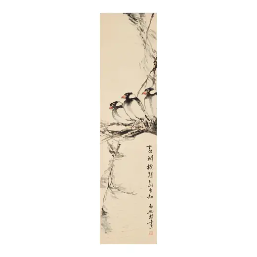

TENG BAIYE (1900–1980), Spring／枝頭春信
访问原网页 ↗Visit original website ↗

S084 · Bonhams, New York · 2026年9月，拍卖32776，拍品1128
拍卖行原页载款识、白也滕圭印及蒋彝旧藏说明，取得三鸟栖枝的拍品全图。The original lot record supplies the inscription, seal and reported Chiang Yee provenance. Its photograph fills the image gap for W011.
馆藏图像与原文Archived images and documents

来源页摘录Source-page excerpt
Bonhams : TENG BAIYE (1900-1980) Spring
… of Chiang Yee, thereafter by descent.滕白也(1900-1980) 枝頭…
原始网址Original URL
https://www.bonhams.com/auction/32776/lot/1128/teng-baiye-1900-1980-spring/